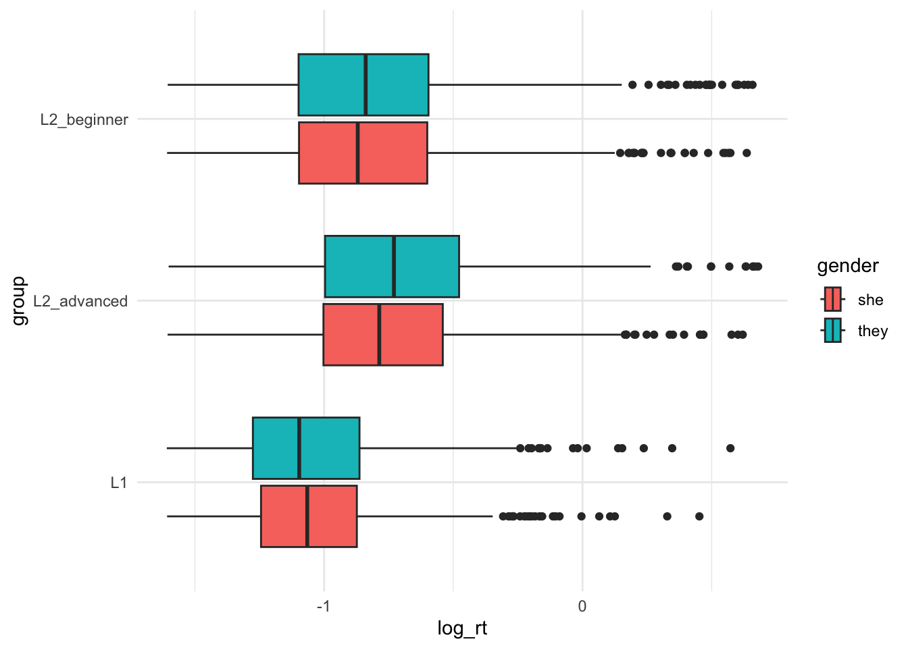
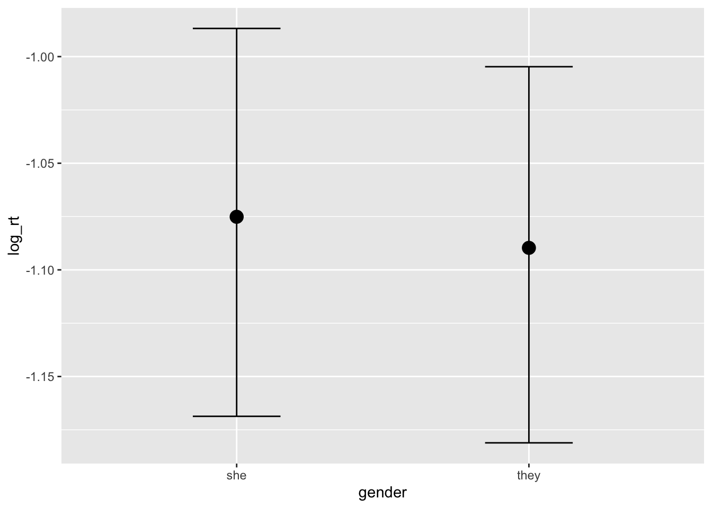
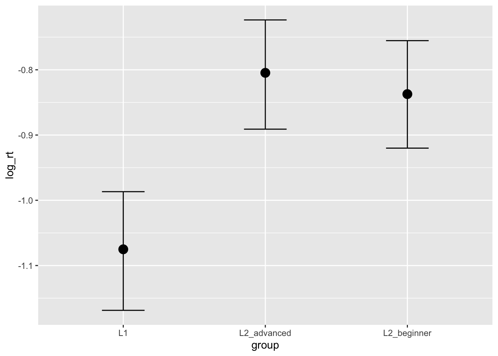
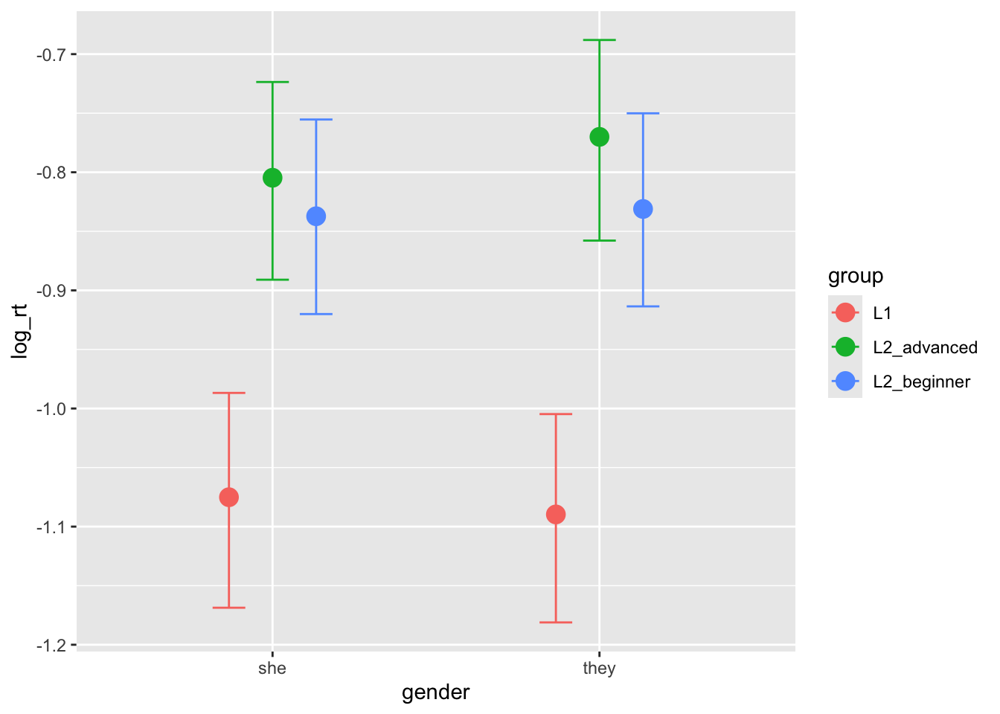
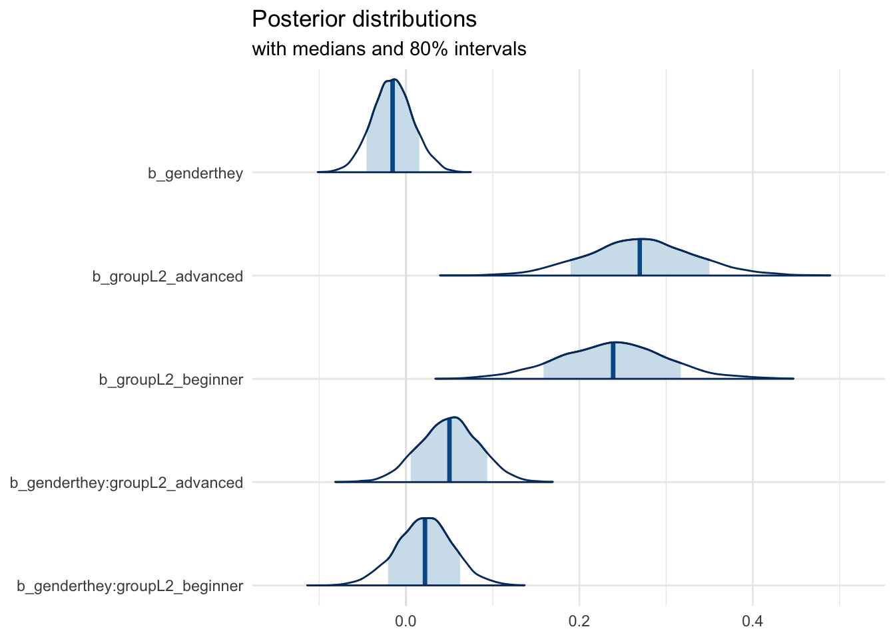

Inclusive they consult
Big picture:
There was not evidence that inclusive they was considered a violation in any group, but L1 speakers were faster overall than L2 speakers.
Visualization:
Model:
The model was a Bayesian mixed effects linear regression. We would consider there to be compelling evidence of an effect if 95% of the highest density interval does not intersect 0. The model was fit in brms using Markov chain monte carlo sampling across 6 processing cores. The model used default priors. The outcome variable was log transformed reaction times, and the predictors were gender, group and their interaction. The random effects included a random slope by participant.
The results of the model do not suggest that any of the three groups processed the two conditions distinctly (we can see this from the interaction terms and genderthey fixed effect).



Family: gaussian
Links: mu = identity; sigma = identity
Formula: log_rt ~ gender * group + (gender | participant)
Data: reg2_dat (Number of observations: 4567)
Draws: 4 chains, each with iter = 2000; warmup = 1000; thin = 1;
total post-warmup draws = 4000
Multilevel Hyperparameters:
~participant (Number of levels: 81)
Estimate Est.Error l-95% CI u-95% CI Rhat Bulk_ESS
sd(Intercept) 0.25 0.02 0.21 0.29 1.00 740
sd(genderthey) 0.09 0.01 0.06 0.12 1.00 1812
cor(Intercept,genderthey) -0.20 0.16 -0.49 0.13 1.00 2505
Tail_ESS
sd(Intercept) 1402
sd(genderthey) 3043
cor(Intercept,genderthey) 2683
Regression Coefficients:
Estimate Est.Error l-95% CI u-95% CI Rhat Bulk_ESS
Intercept -1.08 0.05 -1.17 -0.99 1.01 674
genderthey -0.02 0.02 -0.06 0.03 1.00 1961
groupL2_advanced 0.27 0.06 0.15 0.39 1.01 681
groupL2_beginner 0.24 0.06 0.12 0.36 1.01 665
genderthey:groupL2_advanced 0.05 0.03 -0.02 0.12 1.00 2000
genderthey:groupL2_beginner 0.02 0.03 -0.04 0.09 1.00 2059
Tail_ESS
Intercept 1007
genderthey 2434
groupL2_advanced 1122
groupL2_beginner 891
genderthey:groupL2_advanced 2415
genderthey:groupL2_beginner 2666
Further Distributional Parameters:
Estimate Est.Error l-95% CI u-95% CI Rhat Bulk_ESS Tail_ESS
sigma 0.31 0.00 0.30 0.32 1.00 6738 3185
Draws were sampled using sampling(NUTS). For each parameter, Bulk_ESS
and Tail_ESS are effective sample size measures, and Rhat is the potential
scale reduction factor on split chains (at convergence, Rhat = 1).
Next steps - let’s look at the individual differences as you suggested - more details in the email.